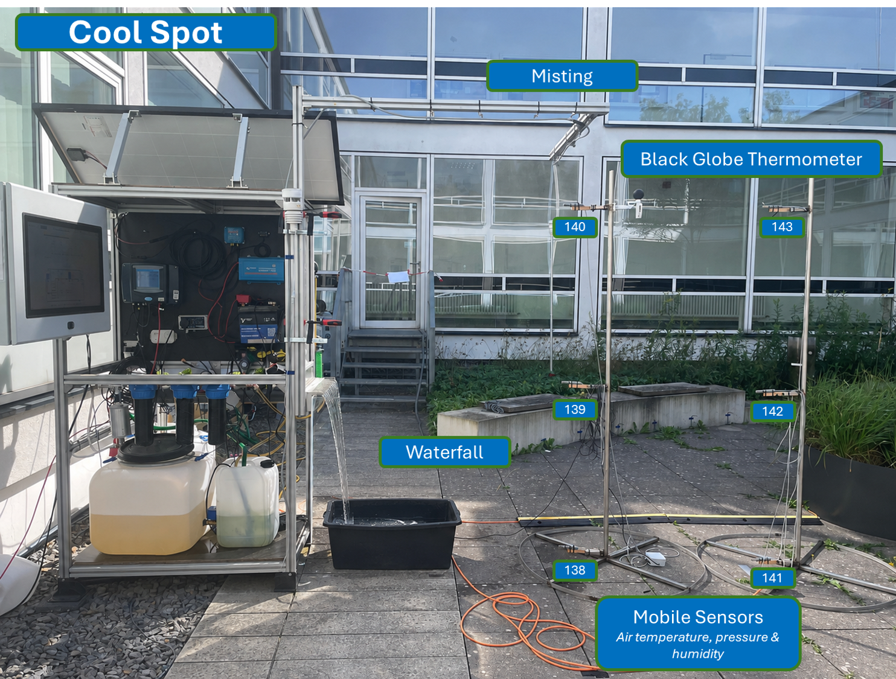

Investigation of local cooling effects and thermal comfort through water-based cooling elements and mobile environmental sensing.

Next to the City Water Hub is a Cool Spot featuring a waterfall and a misting system. Two mobile sensor stations can be flexibly placed throughout the Blue-Green Yard.
Air temperature, pressure and humidity are measured at heights of 0.05 m, 1 m and 2 m. A black-globe thermometer is used to measure radiant heat and to support the determination of thermal stress using the Wet-Bulb Globe Temperature (WBGT).
Neben dem City Water Hub befindet sich ein Cool Spot mit Wasserfall und Vernebelungssystem. Zwei mobile Sensorstationen können flexibel im gesamten Blue-Green Yard positioniert werden.
Gemessen werden Lufttemperatur, Luftdruck und Luftfeuchtigkeit in Höhen von 0,05 m, 1 m und 2 m. Über ein Schwarzkugelthermometer wird zusätzlich die Strahlungswärme erfasst, um die thermische Belastung über den Wet-Bulb Globe Temperature (WBGT) zu bewerten.
The waterfall creates a continuously wetted surface and supports evaporative cooling in the direct surroundings of the City Water Hub.
Fine water droplets are released into the surrounding air to investigate the local cooling effect of water evaporation.
Two mobile measurement stations can be positioned at different locations to compare microclimatic conditions inside and outside the cooling area.
Environmental measurements are combined with radiant-heat measurements to evaluate thermal conditions and human heat stress.
The vertical measurement setup allows microclimatic conditions to be investigated close to the ground as well as within the typical human exposure zone.
Microclimatic conditions directly above the ground surface.
Measurement of temperature, humidity and pressure within the pedestrian zone.
Comparison of vertical temperature and humidity gradients within the courtyard.
Measurement of local temperature changes around the cooling elements.
Monitoring of changes in atmospheric moisture caused by evaporation and misting.
Atmospheric pressure is measured together with temperature and humidity by the mobile sensor stations.
A black-globe thermometer captures the thermal effect of surrounding radiation.
Air temperature alone does not fully describe how hot an outdoor environment feels. Solar radiation, humidity and surrounding surfaces also influence human thermal stress.
Local thermal conditions
Evaporative conditions
Radiant heat exposure
Assessment of thermal stress
The black-globe thermometer complements the mobile microclimate measurements by recording radiant heat and supporting the evaluation of thermal stress.
Determine how strongly the waterfall and misting system reduce local thermal loads.
Mobile sensor stations allow measurements at different positions within the Blue-Green Yard.
Measurements at three heights help identify vertical temperature and humidity gradients.
Black-globe temperature and WBGT provide an additional perspective on thermal comfort and heat stress.